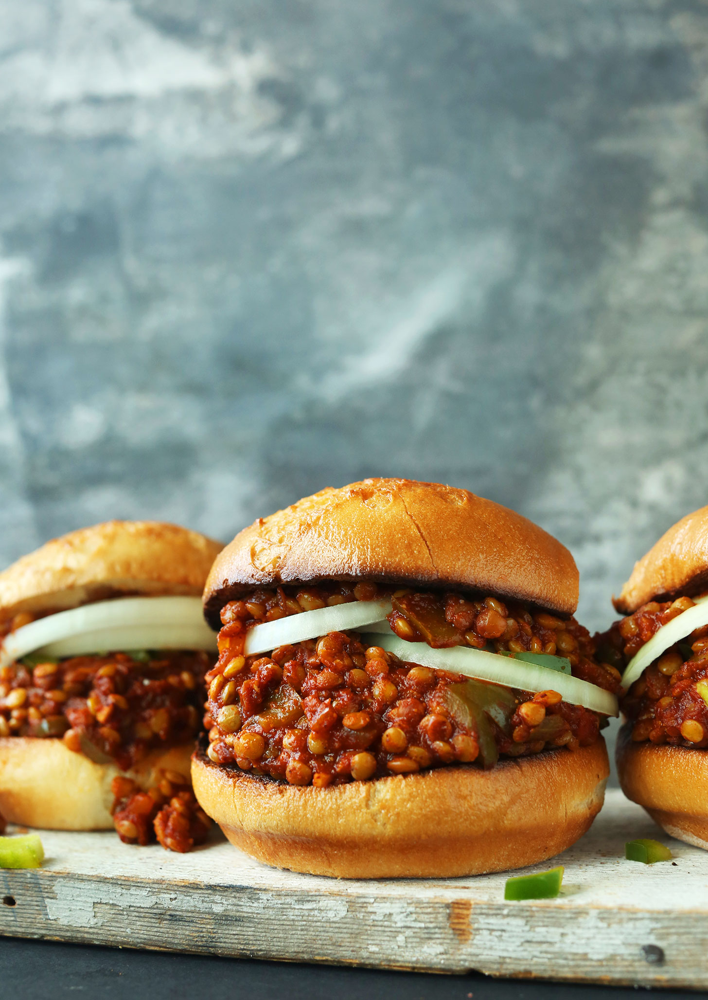

Beyond Meat Sloppy Joes

An American classic vegetarianized with Beyond meat or your favorite meat substitute
Ingredients
- 1 Tbsp vegetable oil
- 1 onion diced
- 1 package Beyond Meat or other ground beef alternative
- 1 small can tomato paste
- barbecue sauce
- Hamburger buns
- Optional: cheese slices, arugula, pickle
Recipe
- Heat oil in a cast iron skillet on medium
- Add diced onion and cook for 8 minutes or so until onions edges begin to caramelize
- Add ground meat alternative and break up, allow to cook until well browned.
- Add about 2/3 of the tomato paste and mix thoroughly, let it start to caramelize
- Add barbecue sauce a few tablespoons at a time until desired sauciness is achieved
- serve on buns with choice of toppings